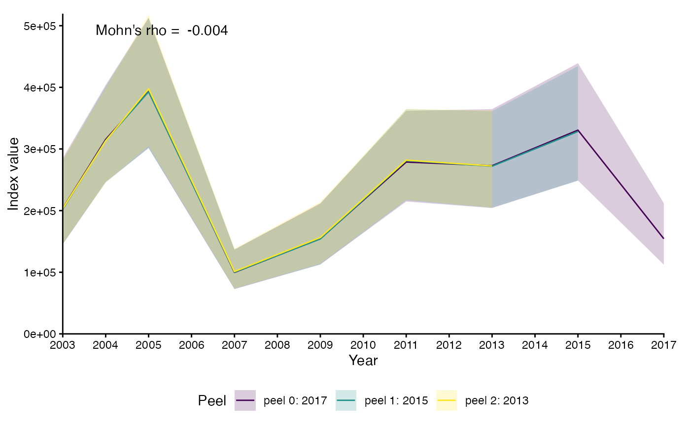

Runs an analytical retrospective on an index from sdmTMB::sdmTMB(). The
function refits the model for each peel (successively dropping the most recent
years) and calculates an index for each peel using
sdmTMB::get_index_split(). Model settings are inherited from the fitted
object.
Usage
sdmTMB_retro(
object,
newdata,
nyears = 5,
refit_meshes = FALSE,
bias_correct = FALSE,
level = 0.95,
area = 1,
save_models = FALSE,
silent = TRUE,
n_workers = nyears,
nsplit = 3,
predict_args = list(),
future_seed = TRUE
)Arguments
- object
A fitted model from
sdmTMB::sdmTMB().- newdata
A data frame to make predictions on, with the same predictor columns as the fitted data and a time column with the same name as in the fitted data. Must contain all years needed for the retrospective (see
nyears).- nyears
Integer. How many peels the retrospective should contain, including the terminal (most recent) year. Clamped to the number of fitted years available.
- refit_meshes
Logical. Rebuild the mesh for each peel from the peeled data (approximating the original cutoff)? If
FALSE(default) the original model mesh is reused unchanged.- bias_correct
Logical. Apply bias correction via
TMB::sdreport()? RecommendedTRUEfor final analyses,FALSE(default) while experimenting.- level
Numeric. Confidence level for the index intervals.
- area
Grid cell area for area weighting the index. Can be a numeric vector of length
nrow(newdata), a single numeric value, or a character column name innewdata. Passed tosdmTMB::get_index_split().- save_models
Logical. Retain the fitted model object for each peel in the output?
- silent
Logical. Suppress model fitting output?
- n_workers
Integer. Number of parallel workers. Defaults to
nyears. Set to 1 to run sequentially.- nsplit
Integer. Number of splits for
sdmTMB::get_index_split().- predict_args
A list of arguments controlling the prediction grid used for the index. Currently
newdatais filtered to the peeled years.- future_seed
Logical or integer. Future-compatible random seed for parallel processing. See
future.apply::future_lapply().
Value
A list of class sdmTMB_retro. Each element corresponds to a peel and
contains an index data frame (and, if save_models = TRUE, the fitted
model object).
Examples
# \donttest{
mesh <- sdmTMB::make_mesh(sdmTMB::pcod, c("X", "Y"), cutoff = 25)
m <- sdmTMB::sdmTMB(
data = sdmTMB::pcod,
formula = density ~ 0 + as.factor(year),
time = "year", mesh = mesh, family = sdmTMB::tweedie(link = "log")
)
nd <- sdmTMB::replicate_df(sdmTMB::qcs_grid, "year", unique(sdmTMB::pcod$year))
retr <- sdmTMB_retro(m, nd, nyears = 3, n_workers = 1)
plot(retr)

# }